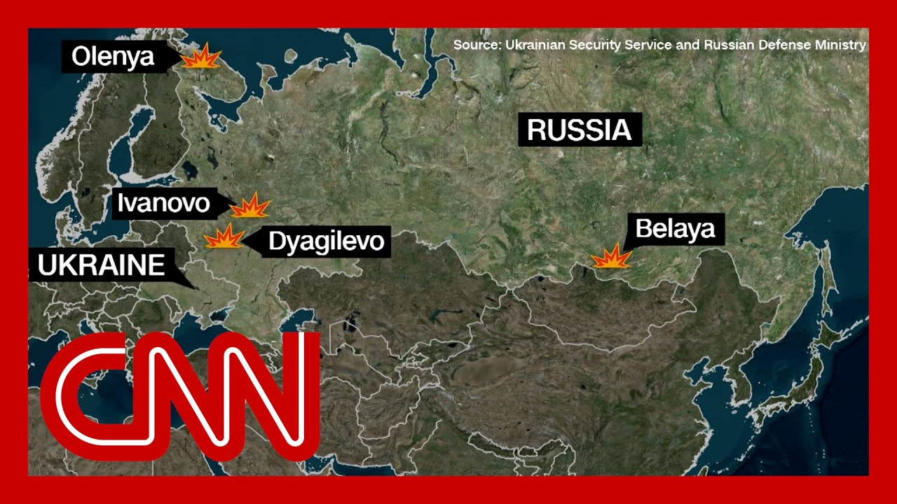

【新图像显示乌克兰对俄罗斯的突袭程度】
Summary: New satellite images show the damage from a massive Ukrainian operation planned over a year and a half, targeting airbases deep inside Russia, with one Russian military blogger calling it Russia's Pearl Harbor.
摘要： 新卫星图像显示乌克兰经过一年半策划的大规模行动对俄罗斯境内深处空军基地造成的破坏，一名俄罗斯军事博主称其为俄罗斯的珍珠港事件。

⏱️ Estimated Reading Time: 14 min
New satellite images and outfron showing the extent of the damage caused by a massive Ukrainian op that took a year and a half to plan against air b deep inside Russia.
新卫星图像和前线报道展示了乌克兰经过一年半策划的大规模行动对俄罗斯境内深处空军基地造成的破坏程度。
One Russian military blogger calling it Russia's Pearl Harbor and the Ukrainian government says that the drone attacks damaged more than a third of Rus strategic bombers.
一名俄罗斯军事博主称其为俄罗斯的珍珠港事件，乌克兰政府表示无人机袭击损坏了俄罗斯超过三分之一的战略轰炸机。
The operation caused more than $ and it did hit airbases across R and one attack happened 2800 miles from Ukraine's border So let's just put that up on a m Just to make this very clear.
此次行动造成超过（金额未提及）的损失，袭击了俄罗斯多个空军基地，其中一次袭击发生在距乌克兰边境2800英里的地方。
That is closer to Japan than it is to Kiev. So you're talking about Tokyo, not Kiev, to think about what it would take to pull that off.
那里距离日本比基辅更近，所以讨论的是东京而非基辅，思考完成这样的行动需要什么。
Well, what did it take? The Ukrainian president Zelensky says 117 drones were us and that these drones were covertly smuggled into Russ inside mobile homes that were transported on trucks and then placed near the airbase The Trump administration official tells CNN.
那么，这需要什么？乌克兰总统泽连斯基表示使用了117架无人机，这些无人机被秘密藏在移动房屋内，通过卡车运入俄罗斯并放置在空军基地附近。
And this is really crucial. The United States was not given a heads up about the operation. That is stunning in and of itsel And as for Putin, it's a major embarrassment, to say the very least.
这一点至关重要。美国未提前获知此次行动，这本身就令人震惊。对普京来说，这至少是一次重大尴尬。
And as Russian media analyst Julia Davis points out, there is utter disbelief and als Tonight on Russian state televis that what you for? How did these trucks get through Who is inspected them? How did you pass the inspection The weigh ins? How did it happen?
俄罗斯媒体分析师朱莉娅·戴维斯指出，俄罗斯国家电视台今晚充斥着难以置信和愤怒：“这些卡车怎么通过的？谁检查的？怎么通过检查的？怎么发生的？”
You know, a level of frustration and anger there expressed by, by now extremely familiar faces on Russian state televisio Putin propaganda supporters.
俄罗斯国家电视台的普京宣传支持者们表达了强烈的沮丧和愤怒。
OutFront now, Vladimir Mislav, a former deputy minister of energy in Russia, served under Vladimir Putin. Obviously. Then, of course, you resigned. V So let me just ask you from the perspective of, you know, when you hear that on Russian state grid, how did those trucks get in? How did they get through the way Right. That frustration you hear How big of an embarrassment is this for Putin?
现在连线弗拉基米尔·米斯拉夫，俄罗斯前能源部副部长，曾在普京手下任职。当然，后来他辞职了。请问，从你的角度看，听到俄罗斯国家电视台的质问“这些卡车怎么进来的？怎么通过的？”这种愤怒对普京来说有多尴尬？
A good evening, Erin. Great to be with you again. It is big indeed enough. But, this is not the first time we just had, a nine month occupation of the part of the Ku region by Ukrainian troops nearl And, that was a major setback to Puti you know, Russian airports, Moscow area airports getting disrupted, if n at least weekly because of perma Ukrainian attacks of, Russian military industry facilities with drones.
晚上好，艾琳。很高兴再次和你交谈。这确实很严重。但这并非首次，乌克兰军队曾占领库区部分区域长达九个月，那也是普京的重大挫折。莫斯科地区的机场每周至少因乌克兰无人机袭击军事工业设施而中断。
Today, I heard on the air that, one of the executives of the Emi airline said that they might be reconsidering the whole schedule of flights to because of these permanent disru So so these setbacks now come, l nearly daily. I mean, and, this is just another example of total failure, the failure of counterintelligence, failure to protect strategic long range and so on.
今天我听航空公司高管说，由于这些持续干扰，他们可能重新考虑整个航班安排。这些挫折现在几乎每天发生。这是反情报失败、未能保护战略远程轰炸机等全面失败的又一例证。
Well, what I hear from Moscow is that people are barely surprised by all this multiple failures. It shows that, Putin system is not as strong as to seem from the outset. Which is very important because obviously on state telev you know, I think the right word to descri the sentiment is fury. Right? There is fury. They are a there's one former KGB agent who was on sayi because of this, Ukraine essentially should be obliterate
我从莫斯科听到的是，人们对这些多重失败几乎不感到惊讶。这表明普京的体系并不像表面那么强大。这很重要，因为国家电视台的情绪可以用“愤怒”形容。一名前克格勃特工甚至称乌克兰应被彻底消灭。
Take a listen. Theater can be insulated so it can be compensated only with them being preventively knocked out down to nothing. There is no other way. So what do you think Putin does here? Well, fury is the right word, but what I don't hear in all his comments is surprise. People are really not surprised because everybody is more or les that, Putin's system is, in a lot of ways, dysfunctional.
听听这段：“必须预防性地将他们彻底消灭，别无他法。”你认为普京会怎么做？“愤怒”是准确的，但我不感到惊讶，因为人们或多或少认为普京的体系在许多方面功能失调。
Clearly, Putin would retaliate again with these barbaric bombardments of Ukrainian peaceful cities, as we saw in the past years, months and weeks. There's no other way to go, because Russia does not have the to like, say, launch, massive, military offensive. They don't have enough personnel So he'll probably resort to barbaric bombardments yet aga
显然，普京会再次野蛮轰炸乌克兰和平城市，就像过去几年、几个月和几周那样。俄罗斯没有足够人力发动大规模军事进攻，所以他可能再次诉诸野蛮轰炸。
I mean, there are other options, like people talk about, potential use of nuclear weapons I don't think that this is on the table, but, again, Putin had shown many time that he's resorting to to barbarity and, r after Ukrainians really do somet sensitive to his military.
还有人讨论使用核武器的可能性，我认为这不在考虑范围内，但普京多次表现出野蛮行径，尤其是当乌克兰对其军事造成敏感打击时。
So now to the what the Russian military blogger sai when he called it Russia's Pearl Now, obviously, Pearl Harbor was, you know, an unprovoked attack on the United States. This is this is obviously, Ukraine trying to take out the b that are bombing Ukraine on a regular basis. So in that sense, it's different But you're talking about the sca of what happened when he refers to Pearl Harbor, presumably, you know, and Zelensky says that operatives planned this, but the planning happened directly next to an office of Russia's intelligence service
俄罗斯军事博主称其为俄罗斯的珍珠港事件。珍珠港是美国遭受的无端袭击，而这是乌克兰试图摧毁定期轰炸乌克兰的轰炸机，所以性质不同。但他指的是规模。泽连斯基称特工策划了此次行动，而策划地点就在俄罗斯情报机构办公室隔壁。
So they did it right next door, and nobody picked up on it. They worked on it for over a yea So to the point you made about, Russia, Putin's status inside Ru does this weaken him domesticall Not immediately. but, you know, step by step, brick by brick. Because, again, when you have so many failures on all fronts, beginning with ec so much promised import substitution, we will soon have no plane planes to fly on b the Boeings and air busses are getting worn there is no maintenance because of the sanctions and so
他们在隔壁策划了一年多却未被发现。这对普京的国内地位不会立即削弱，但会逐步动摇。多领域失败，包括未能实现进口替代承诺，飞机因制裁缺乏维护而老化。
So all of these things will come together. At one point, the probably there will be no immediate consequences after setbacks like this. But then again, you see the reac People are asking questions, how come how this is all possibl We thought that we are like this mighty superpower, which at the end of the day, have all their strategic bombers unprotected. Is that the superpo We imagine so. So sooner or later, I remember, you know, my childhood years in the 80s when all these questions about the inefficiency of the Soviet government came together at one point and, this became louder and louder in for glasnost.
这些因素终将累积。虽然此类挫折不会立即引发后果，但人们开始质问：“我们自诩强大超级大国，却连战略轰炸机都保护不了？”这让我想起80年代苏联政府效率低下的质疑声最终促成“公开化”。
Vladimir, me love, thank you ver I appreciate your time, as alway It is good to see you. I know it's late. Where you are. I want to go now to retired Lieutenant General Ben Hodges. He was the commanding general for the US Army in Europe. Also where you are tonight, gene So how significant do you think these strikes, by U are right right now against Puti
弗拉基米尔，非常感谢你的时间。很高兴见到你。我知道你那边很晚了。现在连线本·霍奇斯退役中将，他曾任美国驻欧洲陆军司令。将军，你认为乌克兰当前的袭击对普京有多重要？
Well, of course, the most, significant thing immediately is a reduction in Russia's ability to kill innocent Ukrainian citiz these bombers were how Russia was launching cruise against Ukrainian cities. So the immediate reduction in that capability. But then I like how Vladimir just described you know, the psychological impa on Russia as people begin to realize that they are not invulnerable. and this will put pressure on, the Putin regime.
最直接的影响是削弱了俄罗斯杀害乌克兰平民的能力，这些轰炸机用于发射巡航导弹袭击乌克兰城市。但正如弗拉基米尔所说，心理影响也很重要，俄罗斯人开始意识到自己并非无懈可击，这将给普京政权施压。
So what does it say to you? And I mentioned this, right before I brought Vladimir into the conversation. Ukraine did not tell the United about these strikes, which is hugely significant, and I can't say exactly did the never have any inkling? I mean, the planning has been go for over a year, right? So that would predate Trump even winning the election. So I don't know if the U.S. knew nothing ever about anything even being thought about. But certainly we know they didn't know about these strikes at this time What does that say to you?
乌克兰未告知美国此次袭击，这非常重要。我不确定美国是否完全不知情，因为策划超过一年，可能早于特朗普当选。但可以确定美国此时不知情。你怎么看？
Well, it tells me that, of course, Ukrainians do not trust the, the Trump administration. I mean, the, they're pretty certain, based on what they seen happenin and coming from the Trump admini that if they had shared or given a heads up that this would have been leaked or handed over somehow, if not s and so I think they don't have a trust there. And then also, even if they did trust the white they would have been concerned about this being discussed over some signal chat group, you know, inside the administrat
这表明乌克兰不信任特朗普政府。他们确信如果提前告知，信息可能被泄露或移交。即使信任白宫，他们也担心行动会在政府内部的聊天群组中讨论。
And so this is why this trust about who runs our intelligence, why this trust is, is so importa So obviously, you're joining from Germany toni and you were the commanding gene So I know that it you know what it means when the German defense chief goes on television, as he did to with the BBC and talked about the possibility of Putin attacking a member of NATO, perhaps soon, here's what he sai
因此，情报系统的信任至关重要。将军，你从德国连线，曾任驻欧陆军司令。德国防长接受BBC采访时称普京可能很快攻击北约成员国，他说：
I think it's a it's a very serious threat, if you ask me now, it's this a guarantee that's not early on in 2029, he would say, no, it's not. So we must be able to fight toni must be able to fight tonight. And but an attack of Putin on NA could come in the next few years Do you think that's realistic?
“我认为这是非常严重的威胁，不能保证2029年前不会发生。我们必须今晚就能战斗。普京对北约的攻击可能在未来几年内发生。”你认为这现实吗？
Well, of course, what General Bo trying to do is help change the inside Germany and the German business fair about what we in the US military call readiness of preparation to be r to fight tonight, having your tr your equipment works, all of tha And General Royer is leading tha But he also is repeating what the British defense, minister has said and other European leaders talki almost the inevitability that Russia plans to attack a NATO country, not in the way that they've attacked Ukraine, but certainly they're going to t especially if they think that th is not going to be a reliable al
鲍里斯将军试图改变德国国内和商界的观念，强调美军所称的“今晚就能战斗”的战备状态。他重复了英国防长和其他欧洲领导人的观点，即俄罗斯几乎必然计划攻击北约国家，尤其若他们认为北约不可靠。
Can the Alliance respond to an attack of some sort? Because Russia's, objective has always been to put a wedge between Europe and the United States and to break apart the Alliance. General Hodges, thank you so muc I appreciate your time tonight.
北约能否应对此类攻击？因为俄罗斯的目标始终是在欧美间制造分歧、瓦解联盟。霍奇斯将军，非常感谢你今晚的时间。